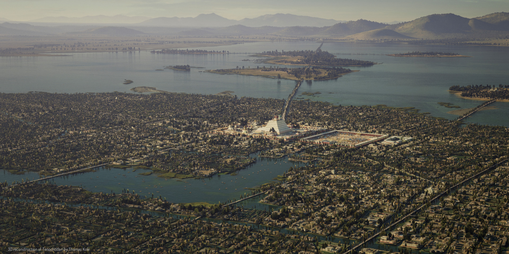

Welcome to Azios!
"The World of the Morning Star"
This is a wiki for a personal worldbuilding project.
"The World of the Morning Star"
This is a wiki for a personal worldbuilding project.
CC BY-NC-SA

Featherscale Isles
The Featherscale Isles are a collection of almost 1000 islands of various sizes with most being less than one square mile. They are inhabited by a diverse collection of cultures who all share a common cultural background. The People of the Featherscale Isles are known for their customs and magic of torture. Their priest kings perform horrible torturous rituatls on themselves in public to bless the people in attendence.
These priest kings and their families are seen as living divine beings who must be obeyed if commanded. Their power is absolute but not transferable to others, so their diplomats and bureaucrats are powerful only in how convincing and inspiring they are in calling others to action and obediance. The priest king rituals only have an effect on those in close proxmimity which has led to fierce competition between the various royal families of the isles. Many of the royal families' priest kings attempt to perform popular or more intense rituals to gather crowds. Altho once in attendence, anyone is within earshot of the priest king and so much obey their commands. The priest kings strike a balance between populism, maintenance of their power, and staying alive amid the self torture.
These priest kings and their families are seen as living divine beings who must be obeyed if commanded. Their power is absolute but not transferable to others, so their diplomats and bureaucrats are powerful only in how convincing and inspiring they are in calling others to action and obediance. The priest king rituals only have an effect on those in close proxmimity which has led to fierce competition between the various royal families of the isles. Many of the royal families' priest kings attempt to perform popular or more intense rituals to gather crowds. Altho once in attendence, anyone is within earshot of the priest king and so much obey their commands. The priest kings strike a balance between populism, maintenance of their power, and staying alive amid the self torture.

One of the many islands and temple complexes of the Featherscale Isles.
Physical Geography
The isles are a tropical climate and have flat coastal plains which rise to mountains. There is little arable land on the islands and so chinampas, reclaimed farm plots, are very common. Many of these islands have been connected to eachother by these earthworks such that their boundaries only exist in cultural knowledge. Many of the smaller or more distant islands are connected by wooden piers or pontoon bridges. At the center of each urban area are large temple complexes where the priest kings perform their rituals and also operate their systems of government. Typically there is a large stadium-like building in which gathered crowds can watch the torturous ritual to get blessed and receive their dictates. Surrounding this stadium are usually other large stone buildings for administration, royal headquarters, and warehouses.War
The Featherscale Isles and their people have not seen war in almost a century. The rituals of the priest kings can be used to provide boons to battle. Any time in the past that the isles were threatened with invasion or conquest, the royal families would all perform various rituals of torment guaranteeing that wounds would not fester, that arrows would be lucky in their shot, that bones would not splinter, etc. So far, no invading force has been able to overcome these blessings altho many scholars debate whether this was simply because the resources of the isles are not worth comitted adequate forces to to capture.Original File: Featherscale Isles.md